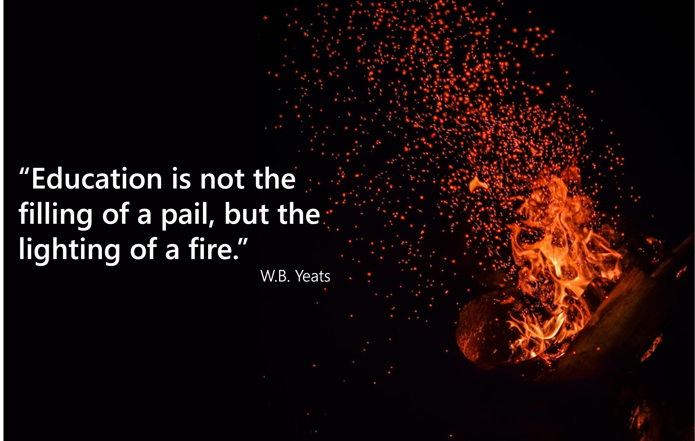

Teaching
Teaching Philosophy and Experience

My commitment to teaching is rooted in empowering others. I attribute my own development as a scientist to the numerous teachers and mentors who encouraged me to take an active role in my education, supported my curiosity, and challenged me to think critically. Their guidance instilled in me an appreciation for intellectual independence. My overarching goal as an educator is to empower students with skills and confidence that extend well beyond any given course or discipline. My teaching experiences range from community outreach programs on a riverbank in Paducah, KY to graduate-level instruction at The Ohio State University (OSU) and everything in between. I taught Introduction to Biological Sciences and General Ecologylabs while pursuing my M.S. degree at Tennessee Technological University (TTU) in Cookeville, TN. I had the unique opportunity to assist with revising course content to meet the social distancing requirements of the COVID-19 pandemic at TTU. This was my first foray into developing course materials with specific learning outcomes, and it was extremely rewarding. It was the joy I found in teaching at TTU that motivated me to pursue a Ph.D. in the hope of one day having a career with both research and teaching duties. I have also had the opportunity to serve as a guest lecturer in Ichthyology, Methods in Field Ecology, and Fish Ecology during my time as a graduate student and postdoctoral scholar. I am currently the instructor of record for Aquatic Ecology, a graduate course at OSU. During my lectures, I aim to bridge longstanding theory with literature-based examples of how ecological research has contributed to our better understanding of contemporary problems. When possible, I use examples of my own research to demystify the scientific process – from asking a question to interpreting the results. Ultimately, I believe students gain the most from coursework that challenges them to work collaboratively, interpret data, and communicate effectively. In addition to preparing students for careers in biology, these skills serve a wide range of professions and are fundamental to being an informed and engaged member of society. Mentoring and working with students is one of the most fulfilling parts of my job. I take great pride in helping students learn, and am excited about the opportunities to engage a wide range of students and budding scientists throughout my career. Here, I describe my approach to teaching team, data, and communication skills using select experiences form formal coursework and mentoring practices.
Team Skills: I place particular importance on teaching collaboration and teamwork skills. The ability to work effectively in a team setting is one of the most sought-after skills among employers. It is central to success in nearly all professional environments, particularly careers in biology. Collaborative, team-based learning not only mirrors common approaches to science but also develops a number of transferable skills (e.g., leadership, conflict resolution, strategy). Moreover, coursework that hinges on effective collaboration promotes a deeper conceptual understanding of course materials as students try to convey their knowledge of a topic to others, exposes to students to diverse perspectives through working with students they may not otherwise interact with, and requires the ability to adapt and empathize with others to accomplish shared goals. I believe these skills are best received through short, in-class activities. In graduate courses, I reinforce these principles through a lesson dedicated to understanding the importance of collaboration in research and approaches to successful team science. I use a mix of my own experiences gained through synthesis working groups at the National Center for Ecological Analysis & Synthesis and other professional experiences on collaborative projects, as well as published resources.
Data Skills: Data literacy and analysis are skills central to many different careers. While many graduate course catalogues offer a variety of statistical courses, I feel it is essential to introduce students to analytical concepts early in their academic training. While contemporary research careers are accompanied by increasingly large datasets and computationally intensive analyses, many professions require the ability to make data-driven decisions. As such, teaching students how to correctly analyze and interpret data is more important than ever. I aim to provide undergraduate and graduate students with the tools to not only conduct and interpret the results of various statistical approaches but truly understand why we use certain approaches in different situations – moving beyond the idea that data analysis is performed by a collection of formulas nested in packages and hidden behind software interfaces (e.g., R, Python). In the age of artificial intelligence, it is especially important that students understand not only what statistical methods do, but how to select an appropriate approach and interpret the results critically.
Communication Skills: It is one of my core beliefs that clear and compelling science communication engages an audience, and communication that engages an audience has the opportunity to make a real impact on science and society. Similar to team and data skills, the ability to communicate clearly and effectively is not unique to careers in biology. I prioritize helping students develop confidence in their oral and written communication skills. I have particularly enjoyed the opportunity to help undergraduate and graduate students as they work on publishing their research during my time at FIU and OSU. I love empowering students to become better writers through providing insight to conceptual frameworks and ideas (e.g., Baby-Werewolf-Silver Bullet, sentence and paragraph arching) that have greatly improved my own writing. Given my experiences with science communication and appreciation for writing that engages a reader, I decided to develop a workshop titled Storytelling with Science. I have had the pleasure of engaging with undergraduate and graduate students, postdocs, and faculty members throughout the state of Florida and Ohio.
Community Engagement and Outreach
I feel strongly that science education should extend beyond university settings to engage local communities. I have had the pleasure of leading numerous community outreach events and programs. I have particularly enjoyed talking about aquatic ecosystems with K-12 students, providing them with hands-on opportunities to view and ask questions about animals native to the rivers and wetlands in their hometown. Many students are fascinated by seeing animals that are always near, though just out of sight below the waterline. I believe that early exposure to science and opportunities to interact with the environment can spark long-lasting interests in the natural world. For instance, if the summer naturalist programs at my local state park did not spark my early interests in ecology, they certainly fanned the flame.